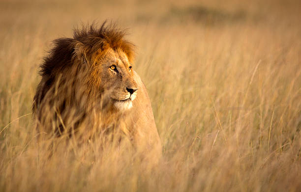
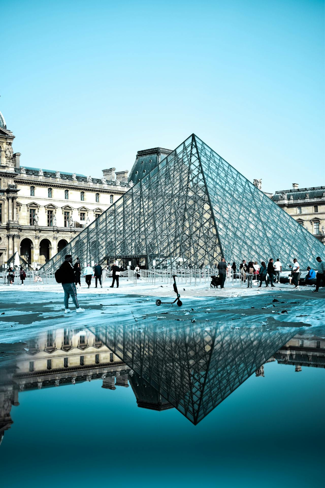

Destionations
Discover your next adventure.
Explore the world's most incredible places with our extounding selection of destinations.Whether you're dreaming of a beach holidays, mountain hiking or a beautiful city night lights veiw,we offer all this for every traveler
Top destinations
Osaka, Japan
Why visit?Kyoto is the heart of Japans culture.With stunning temples,traditional houses, and breath taking gardens.It is also very rich in spiritual experience.The night city lights are also very beautifull.

Things to do:Japan also has very beautiful gardens where you can relax your mind.Or you can visit the shrines ie. The Fushimi Inari Shrine
Paris, France
Why visit?Known as the "city of love" Paris is a blend of art, culture, fashion and history.From the iconic Eiffel Tower to world-class museums, Paris is surely a must-visit in your bucket list.
Things to Do:They offer world class dinning experiences.You can also go for a treasure hunt and try to look for hidden gardens in the city.
Best time to visit:Cherry blossoms are very beautiful and so its always a good idea to visit from march to may April to june and september to November.
Cape Town, South Africa
Why Visit? A dynamic city with stunning beaches, towering mountains, and rich cultural heritage. Cape Town is the ultimate destination for outdoor lovers, offering everything from scenic hikes to vibrant nightlife.
Things to Do: Take the cable car to Table Mountain, visit Robben Island, or enjoy a day at Boulders Beach to see the penguins.
Best Time to Visit: November to February for warm weather and outdoor activities.